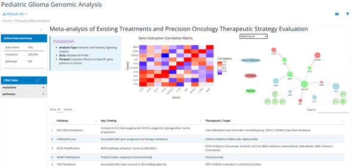

Comprehensive genomic analysis pipeline for pediatric glioma research with interactive visualization and therapeutic target identification
The Shiny application provides an intuitive interface for exploring pediatric glioma genomic data with real-time visualization and analysis capabilities.
Automated download, quality control, and FASTQ conversion from NCBI SRA database with comprehensive validation.
Complete variant calling pipeline including SNV, CNV, and Indel detection with clinical significance annotation.
Sophisticated Teal-based Shiny application for exploratory data analysis and result interpretation.
Meta-analysis of treatment targets and precision medicine approaches with evidence-based recommendations.
The pipeline integrates multiple bioinformatics tools and frameworks to provide a comprehensive analysis workflow:
SRA data processing, variant analysis, and mutational profiling with BioPython integration.
Advanced statistical analysis and interactive visualization using Teal framework and Shiny.
Scalable and reproducible pipeline execution with parallel processing capabilities.
PostgreSQL integration for clinical data storage and meta-analysis management.
This project's innovative approach to SRA data automation was featured in Seqera's technical blog, highlighting the effective use of Nextflow for large-scale genomic data processing.
The pipeline has been successfully applied to pediatric glioma research with significant outcomes:
This pipeline directly contributes to precision medicine in pediatric oncology through: